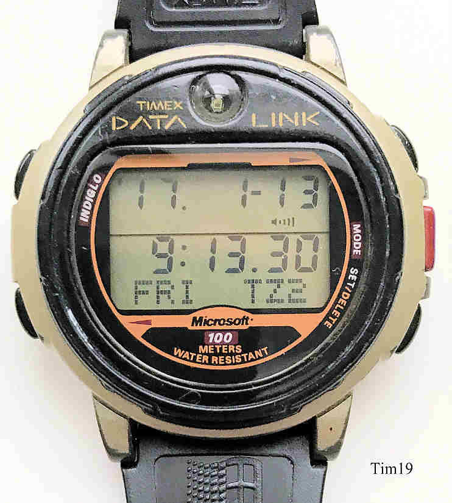

Timex Datalink or Timex Data Link is a line of early smartwatches manufactured by Timex and is considered a wristwatch computer.[1] It is the first watch capable of downloading information wirelessly from a computer.[2][3] As the name implies, datalink watches are capable of data transfer through linking with a computer.[4] The Datalink line was introduced in 1994 and it was co-developed with Microsoft as a wearable alternative to mainstream PDAs with additional attributes such as water resistance, that PDAs lacked, and easy programmability.
Powrót